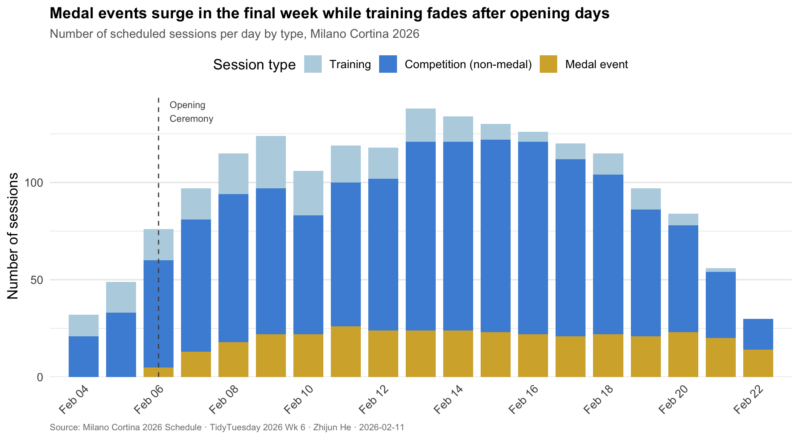
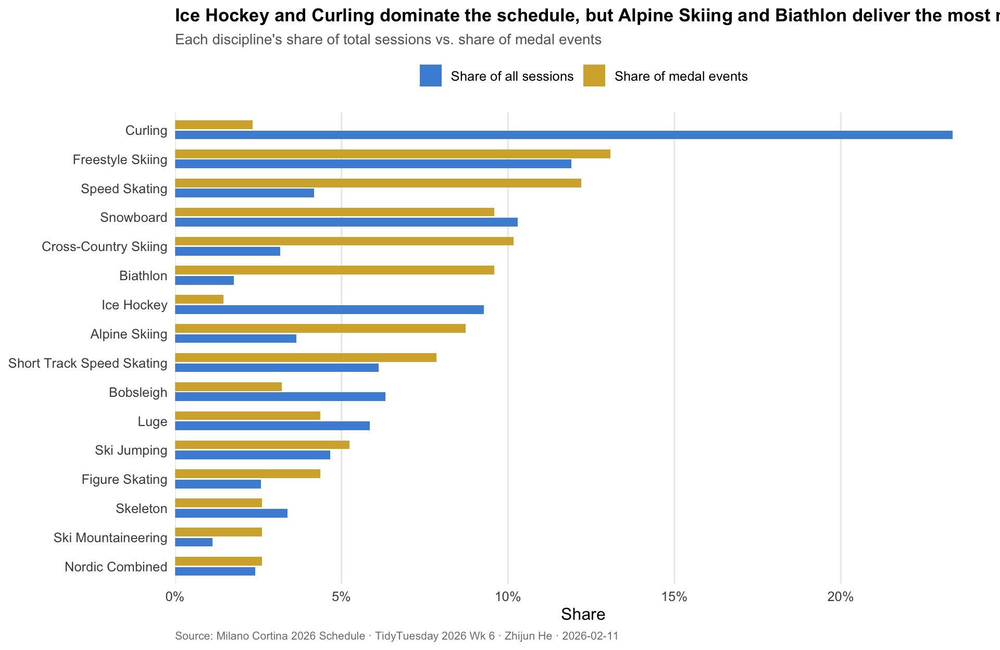

The Rhythm of the Rings
TidyTuesday 2026 · Week 6 · Milano Cortina 2026 Winter Olympics Schedule
Background
The 2026 Winter Olympics in Milano Cortina, Italy, will feature 1,866 scheduled sessions across 16 sport disciplines, spanning from February 4 through February 23. These sessions include official training runs, qualification rounds, preliminary matches, and medal events. The schedule dataset captures start and end times, venue information, and crucially whether each session is a training run, a competition, or a medal-deciding event. This year’s Games also introduce ski mountaineering as a new Olympic discipline.
Not all Olympic days are created equal. The opening days are dominated by training sessions and preliminary rounds, while the final weekend packs in a concentrated burst of gold-medal moments. For fans deciding when to watch—and for broadcasters planning coverage—the distribution of medal events over time is what defines the dramatic arc of the Games.
Motivation & Research Question
Olympic organizers face a scheduling puzzle: spread medal events too thin and individual days feel uneventful; cluster them too tightly and viewers miss key moments. The resulting schedule reflects deliberate decisions about pacing and drama. Understanding this tempo can help fans prioritize which days to follow most closely and reveals how different sports contribute to the Games’ overall rhythm.
This analysis asks: How does the Milano Cortina 2026 schedule distribute medal events across its 20-day span, and which disciplines drive the peaks in medal-event intensity?
Data Preparation
Show code
# Parse dates and compute event duration
sched_clean <- schedule |>
mutate(
date = as.Date(date),
# Compute duration in minutes from UTC times
duration_min = as.numeric(
difftime(end_datetime_utc, start_datetime_utc, units = "mins")
),
# Create a session type label
session_type = case_when(
is_medal_event ~ "Medal event",
is_training ~ "Training",
TRUE ~ "Competition (non-medal)"
),
session_type = factor(
session_type,
levels = c("Training", "Competition (non-medal)", "Medal event")
),
# Day number relative to opening ceremony (Feb 6)
day_number = as.integer(date - as.Date("2026-02-06")) + 1
)
# Quick summary
cat("Total sessions:", nrow(sched_clean), "\n")Total sessions: 1866 Show code
Date range: 2026-02-04 to 2026-02-22 Disciplines: 16 Medal events: 344 Training sessions: 246 Visualization 1: Medal Events Surge in the Final Week While Training Fades After Opening Days
Show code
# Count sessions per day by type
daily_counts <- sched_clean |>
count(date, session_type) |>
# Fill in any missing combinations with 0
complete(date, session_type, fill = list(n = 0))
# Mark opening ceremony date
opening <- as.Date("2026-02-06")
ggplot(daily_counts, aes(x = date, y = n, fill = session_type)) +
geom_col(width = 0.8) +
geom_vline(
xintercept = opening, linetype = "dashed",
color = "grey30", linewidth = 0.5
) +
annotate(
"text", x = opening + 0.3, y = Inf, label = "Opening\nCeremony",
hjust = 0, vjust = 1.3, size = 3, color = "grey30"
) +
scale_fill_manual(
values = c(
"Training" = "#b8d4e3",
"Competition (non-medal)" = "#4a90d9",
"Medal event" = "#d4af37"
),
name = "Session type"
) +
scale_x_date(
date_labels = "%b %d", date_breaks = "2 days",
expand = expansion(add = 0.5)
) +
scale_y_continuous(expand = expansion(mult = c(0, 0.05))) +
labs(
title = "Medal events surge in the final week while training fades after opening days",
subtitle = "Number of scheduled sessions per day by type, Milano Cortina 2026",
x = NULL, y = "Number of sessions",
caption = "Source: Milano Cortina 2026 Schedule · TidyTuesday 2026 Wk 6 · Zhijun He · 2026-02-11"
) +
theme_minimal(base_size = 13) +
theme(
plot.title = element_text(face = "bold", size = 14),
plot.subtitle = element_text(color = "grey40", size = 11),
plot.caption = element_text(color = "grey50", size = 8, hjust = 0),
axis.text.x = element_text(angle = 45, hjust = 1),
legend.position = "top",
panel.grid.major.x = element_blank(),
panel.grid.minor.x = element_blank()
)
The schedule has a clear dramatic arc. The first few days (Feb 4–5) are almost entirely training sessions as athletes complete mandatory official runs. After the Opening Ceremony on February 6, competition begins in earnest. The gold bars of medal events grow steadily thicker through the middle of the Games, then peak in the final days as multiple disciplines hold their finals simultaneously. The blue competition sessions remain relatively steady throughout, providing a constant backdrop of qualification rounds, preliminary matches, and heats.
Visualization 2: Ice Hockey and Curling Fill the Schedule; Alpine Skiing and Biathlon Deliver the Most Gold
Show code
# Compute share of total sessions and share of medal events by discipline
discipline_summary <- sched_clean |>
group_by(discipline_name) |>
summarise(
total_sessions = n(),
medal_sessions = sum(is_medal_event),
training_sessions = sum(is_training),
competition_sessions = total_sessions - training_sessions,
.groups = "drop"
) |>
mutate(
pct_total = total_sessions / sum(total_sessions),
pct_medal = medal_sessions / sum(medal_sessions)
) |>
arrange(desc(total_sessions))
# Reshape for a paired bar chart
disc_long <- discipline_summary |>
select(discipline_name, `Share of all sessions` = pct_total,
`Share of medal events` = pct_medal) |>
pivot_longer(-discipline_name, names_to = "measure", values_to = "share") |>
mutate(
discipline_name = fct_reorder(discipline_name, share, .fun = max, .desc = FALSE)
)
ggplot(disc_long, aes(x = share, y = discipline_name, fill = measure)) +
geom_col(position = position_dodge(width = 0.7), width = 0.6) +
scale_x_continuous(labels = percent_format(accuracy = 1),
expand = expansion(mult = c(0, 0.05))) +
scale_fill_manual(
values = c(
"Share of all sessions" = "#4a90d9",
"Share of medal events" = "#d4af37"
),
name = NULL
) +
labs(
title = "Ice Hockey and Curling dominate the schedule, but Alpine Skiing and Biathlon deliver the most medals",
subtitle = "Each discipline's share of total sessions vs. share of medal events",
x = "Share", y = NULL,
caption = "Source: Milano Cortina 2026 Schedule · TidyTuesday 2026 Wk 6 · Zhijun He · 2026-02-11"
) +
theme_minimal(base_size = 12) +
theme(
plot.title = element_text(face = "bold", size = 13),
plot.subtitle = element_text(color = "grey40", size = 10.5),
plot.caption = element_text(color = "grey50", size = 8, hjust = 0),
legend.position = "top",
panel.grid.major.y = element_blank(),
panel.grid.minor = element_blank()
)
This comparison reveals a key asymmetry in the Olympic schedule. Ice Hockey and Curling account for an outsized share of total sessions because their tournament formats require dozens of preliminary matches, but each discipline awards only a handful of medals. By contrast, Alpine Skiing and Biathlon pack many medal events into fewer sessions—each race is a standalone final. For medal-focused viewers, this chart is a guide to where the action is: if you want to see gold decided, follow the skiing and biathlon; if you want the drama of extended tournament play, tune into hockey and curling.
Takeaway
The Milano Cortina 2026 schedule is deliberately structured to build momentum. Early days are spent on training and qualification, the middle stretch introduces a steady stream of medal events, and the final weekend delivers a crescendo of gold-medal moments. But the sports contributing to this rhythm play very different roles: tournament-format sports like Ice Hockey and Curling fill the calendar with sessions, while individual-event sports like Alpine Skiing and Biathlon are the primary engines of the medal count. Knowing this distinction helps fans plan their viewing—or, if you are in Minneapolis in February, a good excuse to stay inside and watch all of it.